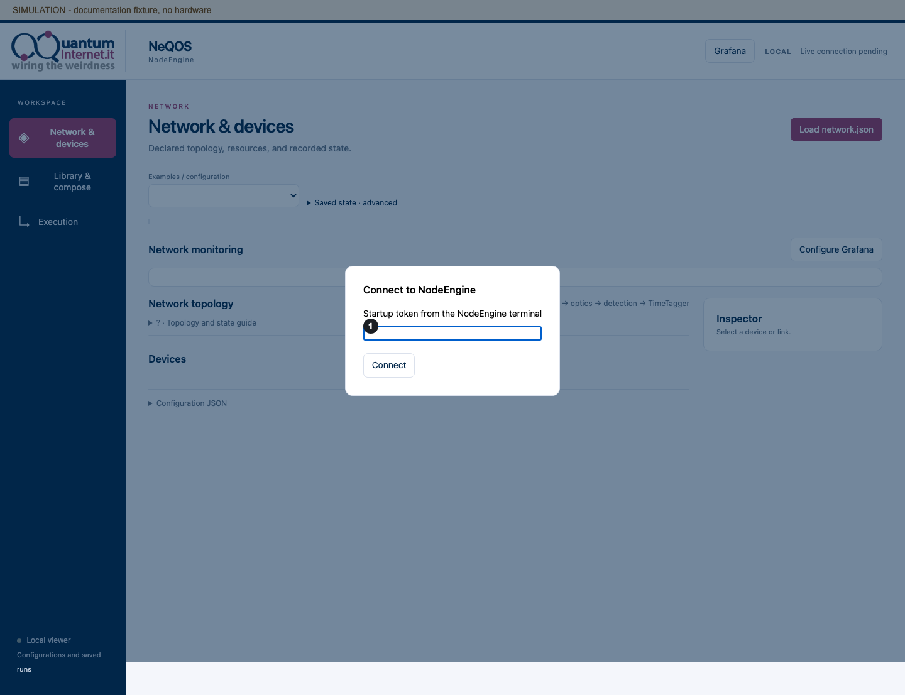
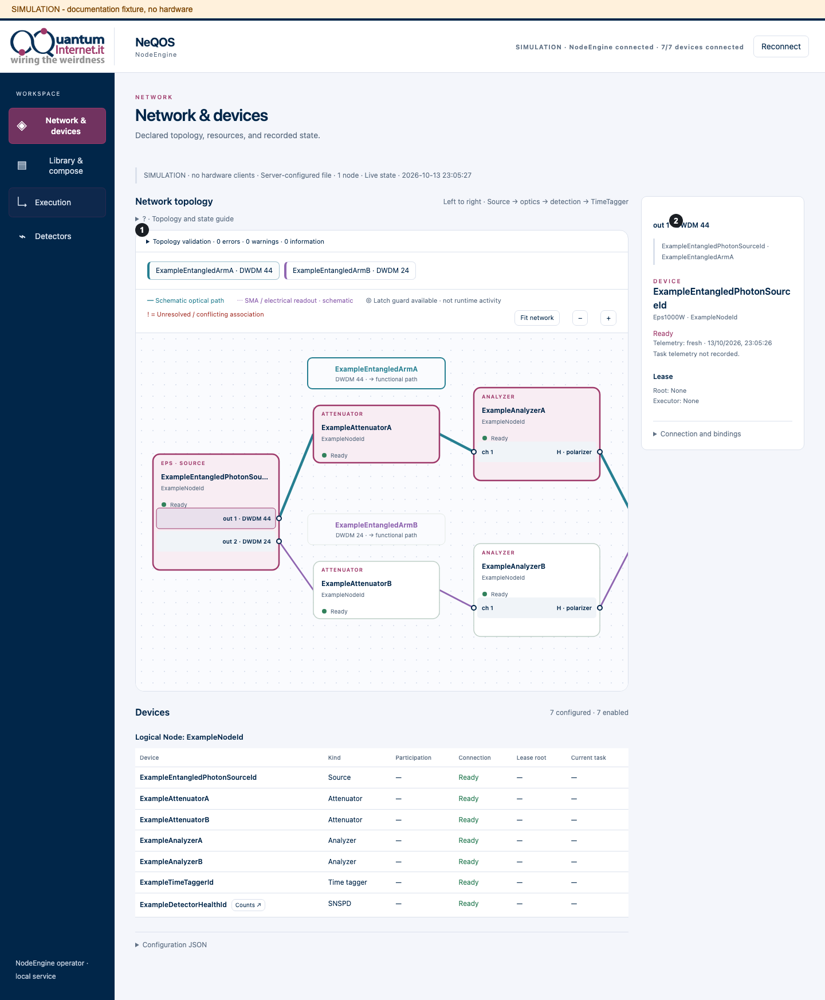
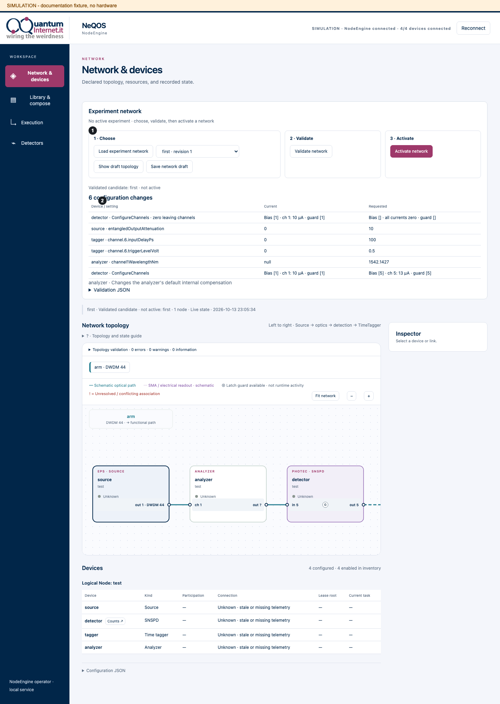
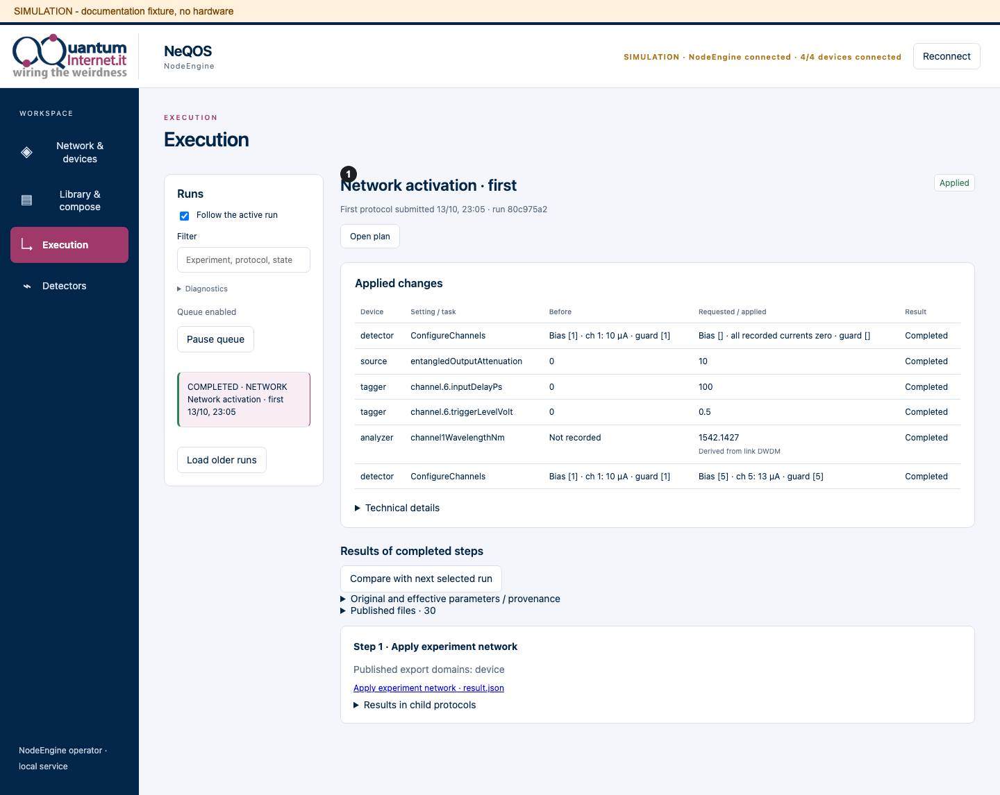
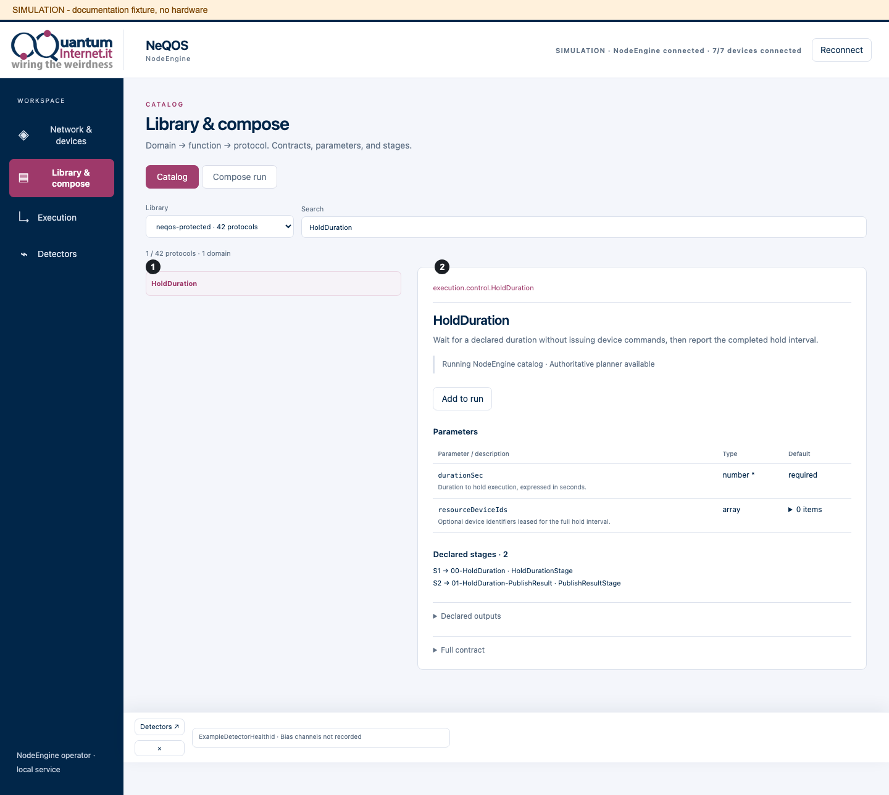
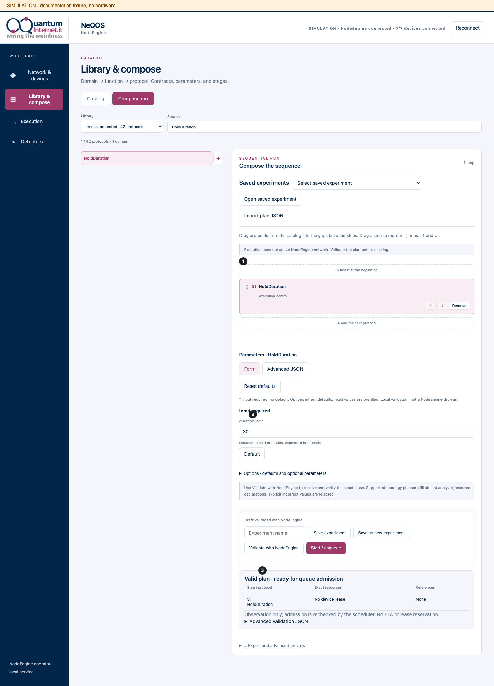
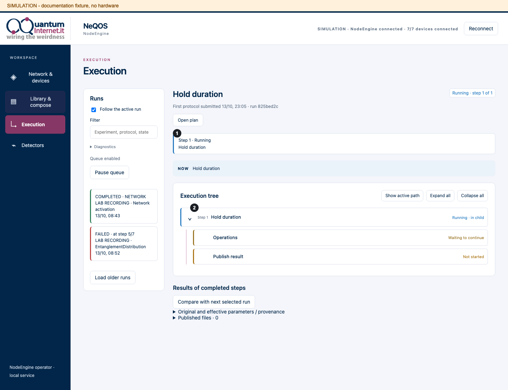
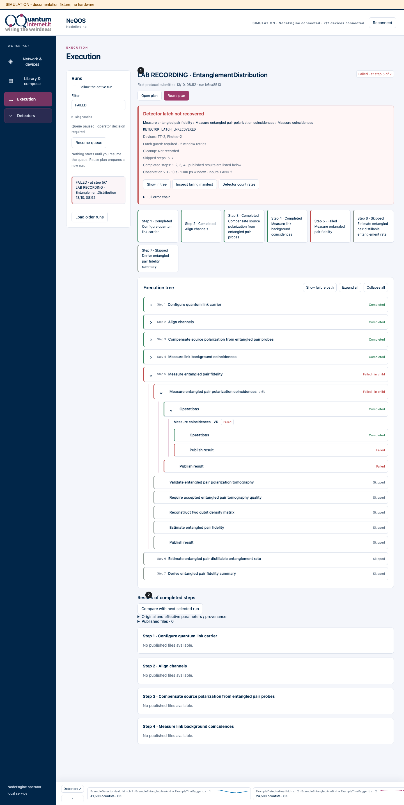
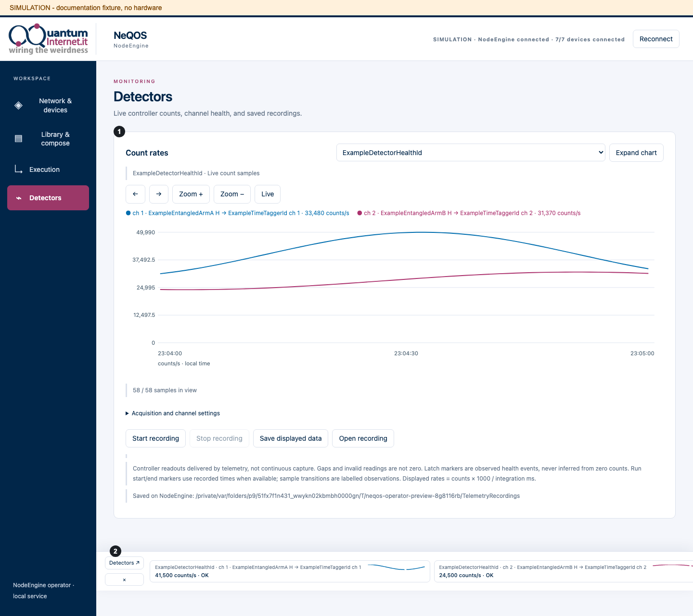

6. Use the browser interface¶
The operator interface is served by the same NodeEngine process that schedules the experiment. Closing a browser tab does not stop its run. The standalone viewer is a separate, hardware-read-only entrypoint: importing a network or state snapshot into that viewer does not connect to a running engine.
The numbered screenshots use disposable simulation fixtures, never a live laboratory. Their SIMULATION banner stays visible. Example identities, traces and failure records illustrate the interface; they are not new experimental observations. Select an image to inspect it at full size.
Connect to the operator¶
Follow Run and customize a protocol for --serve, the startup token and a same-port SSH
tunnel when the browser is on another computer. Start one NodeEngine operator
for the intended network, with matching DeviceOS processes and a valid license.
An operator cannot attach itself to another already-running NodeEngine.
Open the loopback URL printed by NodeEngine (or your SSH tunnel URL).
Enter the startup token from that engine’s terminal.
Select the intended experiment network before composing a run.


1 Startup token. Authentication connects this browser to the existing engine.¶
For stable equipment inventories and experiment activation, use Describe the network. The active experiment network supplies the operator’s devices and selectors; the operator does not import arbitrary local network snapshots as live state.
Warning
Starting the production operator boots the real engine and may initialize configured devices. Review wiring, serial numbers, source powers and detector settings before launch. The offline viewer below does not execute hardware.
Configure trusted Open libraries at NodeEngine startup with repeatable
--openLibrary /absolute/path/library arguments. The browser can select these
libraries, but cannot upload Python handlers or choose arbitrary server folders.
The operator requires its optional runtime and browser assets in the installed
distribution; see Install the software.
Catalog paths describe taxonomy without renaming runtime IDs. Open entries without declared taxonomy appear as unclassified. The offline viewer displays the supplied source catalog; it does not prove which library a compiled running engine contains.
Inspect the network and devices¶
Network & devices shows the declared optical paths, splitter ports, polarization analyzers, detectors and Time Tagger electrical readout. Select a device, link or port to inspect its bindings, channels and current observations. In the device table, every device name or row opens the inspector. Photec rows also provide Counts ↗ to open Detectors with that controller selected. Optical edges and electrical readout edges are schematic; verify the actual laboratory cabling independently.


1 Declared topology. 2 Selected device or link details.¶
Activate an experiment network¶
Choose an
experiment-1document with Load experiment network, or select a saved network. Inspect its draft topology.Use Validate network. Review current and requested values, warnings and device readiness.
Use Activate network and confirm the reviewed warnings when prompted.
Follow the activation in Execution. A completed activation marks the intended network active; a draft or validation alone does not.
With a lab inventory, Load experiment network immediately shows the declared topology as Draft · not validated · not yet activated, including when devices are offline. Opening a saved network provides the same preview. This uses only the inventory and experiment document; it does not query or configure hardware. Validate network then checks device readiness and reads current settings. Activate network applies the validated configuration. A failed validation leaves the draft visible but unavailable for activation. Without a loaded draft, Validate and Activate are disabled. Loading a draft disables file, saved-network and last-active selectors until Clear selected network clears that selection. Successful validation disables Validate and enables Activate; activation consumes that validation. Once a network is active, selecting or validating another network is disabled: first deactivate the current network, then load the replacement. Controls remain locked during execution and cleanup.
Clear selected network is available for a selected, not-yet-active network; it returns to the inventory view without deleting a saved network or changing device settings. Deactivate network is a separate action available only when there are no queued/active runs, protocol executions, cleanup operations, or held device leases. It clears the active topology from NodeEngine and returns to the inventory view, but it does not restore or change physical device settings. The warning is shown before confirmation. Runs remain blocked until another network is activated. To keep a candidate for later without activating it, use More → Save draft to saved networks, even before device validation. Saving checks the document against the inventory but does not validate device readiness, activate a network, or change hardware settings. Activation also saves the network. Topology preview is automatic; there is no separate Show button. Validated draft · not yet activated means validation succeeded but the draft has not been activated. No device setting changes required means the requested settings already match; Activate network is still required to select this topology for experiments. No empty changes table is shown in this case.


1 Choose, validate and activate. 2 Current/requested settings.¶


1 Activation outcome. Read each applied change and its recorded result.¶
Configuration read-back uses the same NodeEngine timeout as protocol hardware calls: currently 120 seconds per request, with PING retaining its 5-second timeout. Driver limits still apply and can return an error earlier. The request continues as soon as the reply arrives; failed read-back prevents activation.
Absent sources and unmodelled detectors are annotations, not fabricated devices or telemetry. Unbound resources remain separate; disabled links are marked as disabled. Very large imports can use a labelled membership layout rather than the detailed schematic. Diagram fit/zoom do not establish physical cable order.
Each physical device appears once. Passive splitters have no driver, readiness, telemetry or lease. Off means disabled in the inventory (or in a legacy single-file network). Not in experiment means the device is available in the inventory but excluded from the selected experiment. Participation and observed connection state are separate: an excluded device may still be connected. Before selecting an experiment, no experiment participation is inferred. A missing detector declaration is not an invented health observation: required detector protection needs the exact enabled detector/readout pairing. A G annotation means a latch guard is available, not that the current run enabled it.
Live device telemetry uses NodeEngine’s freshness window:
max(nodePingTimeoutSec, telemetryInterval × 2.5), currently 75 seconds
for the normal 30-second DeviceOS publication interval. Older telemetry is
stale, not proof of disconnection.
Unknown or stale health does not establish Ready. A healthy device can be
Leased: inspect both its lease root and active executor, separately from
whether a task is running. The stale threshold is not a lease-expiry rule.
Use Fit network or Actual size for presentation. Selecting ports highlights the declared path. On narrow screens the inspector is a dismissible drawer; closing it does not change the network or experiment.
Compose and validate a run¶
The browser does not execute every protocol in the catalog. Entries labelled Not runnable in browser remain inspectable, but their add and drag controls are unavailable in the connected operator. Support comes from NodeEngine’s audited planner, not from the presence of a protocol in the Library. The generated coverage list below identifies the accepted built-in definitions. Trusted command-line runs have a different admission boundary.


1 Catalog selection. 2 Declared inputs and stages.¶
Open Library, select a configured library and inspect Catalog. Search uses the protocol’s catalog path and description. Inspect its inputs, defaults and declared outputs before adding it.
In Compose run, add protocols with the add control or drag them into insertion gaps. Reorder steps with the handle or arrow controls. Repeated occurrences retain independent inputs; top-level steps have independent leases, as described in Run and customize a protocol.
Supply required inputs and review Options, including default values, calibration effects and detector-health policy. Advanced JSON edits the overrides directly. Reset defaults clears overrides and restores fixed choices. A field with a usable default need not be supplied, but explicit null still fails a non-null requirement.
Use Validate with NodeEngine. Inspect the per-step resource plan, export references, physical-change warnings and structured step/field errors. An edit invalidates previous validation results; correct errors and validate again before starting.
Save a named experiment when appropriate, or export its JSON for review. Use the start/enqueue action when the operator is idle and the network is active. Starting validates again, and queued runs are revalidated before execution against the catalog and network they were submitted for.


1 Ordered sequence. 2 Effective inputs. 3 Validated resource plan. This illustrated hold has no device lease; the Fake quickstart explicitly reserves one.¶
Validation does not run handlers, submit device tasks, initialize drivers or
acquire leases. Topology planners can derive supported resource declarations
and reject explicitly wrong ones. A valid plan does not reserve resources,
promise immediate execution or provide an estimated completion time.
Future $steps results are checked as references during preflight; their
resolved scientific values are checked before the consuming step is submitted.
Protocols accepted by the operator¶
The current canonical built-in definitions accepted by the operator planner are:
This list is generated from the planner and shipped contracts. Network/input validation still applies; altered stage bindings can be rejected. A visible catalog entry is not by itself permission to start that protocol through the operator.
Configured Open compositions must be covered by audited static stages and statically resolved children. Dynamic template selection and arbitrary custom Python handlers do not become operator-runnable simply by declaring resources. This operator boundary is separate from what a trusted library can execute through the command-line runtime.
What is available during execution¶
While a run, network activation or cleanup is active, the interface permits observation of the current run and its network/devices, plus the current run’s abort action where applicable. The UI and API block draft/library editing, new plan validation/submission, network import/preview/save/validation/activation, queue changes and historical browsing. Conflicting API requests return 409.
Previously queued work, planned run steps and runtime child protocols continue according to their execution and lease rules. The busy lock does not cancel them. One operator run is active at a time; its internal child concurrency is still controlled by NodeEngine. Pending runs can be reordered or removed when idle, but their submitted inputs cannot be edited in place.
Observe and abort¶
Follow the active run’s stepper and NOW path in Execution.
Select a protocol or stage to inspect its timing, device tasks and leases.
For a failure, inspect its deepest recorded cause and completed-step results.
Use Abort run when appropriate, then wait for terminal cleanup.
When idle, use Reuse plan to create and validate a new draft; use Resume queue only to allow already-pending runs to proceed.


1 Run-plan progress. 2 Recorded runtime tree.¶


1 Failure and recorded cause. 2 Results that remain available after failure. See Acquisition and detector error reference for detector classifications.¶
Execution follows actual runtime identities. Repeated protocol definitions produce distinct instances. Requeue attempts belong to the same stage; unstarted stages after failure or abort are Skipped, not fabricated children. Missing historical evidence remains unknown. The Runs column is the run timeline and includes a filter and Follow the active run. While execution or cleanup is in progress, only the current run is available. When idle, selecting another run turns Follow off. Queue Pause/Resume is idle-only; Abort run appears in the active run’s header and on Network & devices while a run is in progress. Both controls invoke the same run-level abort and pause the queue; after the run and cleanup finish, the network action changes to Deactivate network when a network is active.
Run names use the saved experiment name, a network-activation label, or the first and last protocol names. The short run ID remains in the header and the full runtime identities remain in technical details. Open plan is read-only; Reuse plan opens a new draft in Library & compose, never restarts a failed run implicitly. Saved experiments are also opened from Library.
Execution uses a vertical tree and a wrapping plan stepper. A chevron expands a branch; the name selects its record independently. The NOW breadcrumb selects the active child chain. Follow keeps the last opened branch during gaps between children, and live updates retain the existing tree controls. Adjacent submit/wait stages can be grouped. Long completed operation sequences collapse to a count; their individual chips remain available. The original stages and requeues remain in the evidence. Many operations inside one iteration are not many independent iterations.
Scheduled or requeued parents with non-terminal recorded children are labelled Running · in child; propagated failures show Failed · in child. The raw scheduler state and requeue counts remain in Technical details. Requeues are scheduler continuations, not failed measurements or latch retries. Chips use recorded projection labels only when unique; repeated observation IDs retain distinct ordinal labels and tooltips. No projection is inferred from an operation’s position.
Select stages, iterations and child operations to inspect recorded timing, task results and leases. Handler-time totals exclude waits between invocations; missing device start events remain unknown. A partial live timing window is not an all-time total, and no percentage or ETA is inferred from dynamic stages. The inspector opens as a dismissible drawer and refreshes the selected record as the run evolves. Failure cards show the deepest recorded cause, the path, devices, guard and skipped steps; parent errors are in a separate disclosure. Cleanup without evidence is Not recorded, never assumed successful. Results and declared files from completed steps remain available after failure. Network-activation runs use a compact changes table rather than the protocol tree; missing previous values stay Not recorded. An interval between submission and an update is not a recorded stage duration. The inspector separates direct device tasks from tasks recorded by descendant protocols, with links to their owners. It shows up to 12 descendant tasks, active first, and identifies incomplete history. Missing task records do not imply that the hardware is idle; unfinished durations stop at the last observed update. For a failed run, the graph shows the recorded cause from the failing descendant and a button to inspect it. The inspector displays the selected protocol’s error above timing and task details, without requiring the advanced JSON view.
After failure, Resume queue enables pending runs; it does not restart the failed experiment. Reuse plan loads that run’s original plan as a Library draft, retaining its provenance. Validate the draft and start a new run; already completed steps can execute again. Parameters and published files always follow the same selected run as the execution graph.
Abort stops the whole operator run, prevents later plan steps, invokes the runtime’s descendant and terminal cleanup, and pauses the queue. The run remains ABORTING until cleanup evidence is collected. Repeated abort requests do not repeat cleanup. Controls unlock only after execution/cleanup has finished.
Warning
Abort is not a whole-experiment undo. Completed persistent calibration writes and completed prior steps are not rolled back. Read the applied outputs, abort report and restoration replies. An acknowledgement or a requested persistence flag is not confirmation that restoration succeeded.
When idle, Resume queue allows queued runs to proceed. It is not mid-stage protocol resume and does not force-clear leases. After an operator restart, its previously active records become INTERRUPTED; queued runs remain stored and the queue stays paused. Re-activate an experiment network as required by Describe the network, review the evidence and decide explicitly how to proceed.
History, revisions and parameter reuse¶
When idle, use the timeline/run picker to select archived runs, filter by experiment and load older records. The execution graph, grouped published files and expandable parameter sections follow the selected run. Compare original, planned and executed inputs; abbreviated scientific arrays are previews, not the full data. Read Read results and diagnose failures for complete evidence files and backup.
The picker initially selects the newest recorded archive. When an update timestamp is missing/invalid, a visibly labelled file-time fallback may be used; unreadable metadata stays unknown. Search matches identity, label, state and date, grouped by archive month. A selected run outside a filter stays selected. An archived RUNNING label is historical, not proof of a currently live run.
Use a previous run as a new draft to repeat or modify an experiment. Starting changed inputs for a named experiment creates a new revision; Save as new experiment creates a distinct identity. Revision checks detect conflicting edits from another tab. Reuse retains source-run provenance; it does not rewrite history, replay a measurement’s outputs or resume a previous run mid-step.
PNG plots can be previewed and published files downloaded within the selected run. CLI archives have no invented operator experiment identity; inspect them through the standalone viewer or folder import.
Reconnect and authentication¶
The GUI reconnect button immediately reopens the browser’s authenticated live connection; normal automatic retry continues if the connection is still unavailable. It does not restart NodeEngine or devices, activate a network or change device settings. The browser receives authenticated full state replacements. A reconnect does not authorize a new run or terminate one. Expired sessions require the startup token again; a server restart also reloads configuration. Tokens stay out of URLs, browser storage and archived run inputs. Treat them as credentials.
The service binds to loopback and checks Host/Origin, sessions and command requests. For another computer, use the SSH tunnel in Run and customize a protocol; direct remote exposure, multiuser roles and force-lease recovery are not available. Same-host endpoint locks do not prevent older binaries or another computer from operating the same hardware: coordinate laboratory ownership separately.
Photec count rates¶
The connected operator provides a dedicated Detectors page with a native
Count rates chart. Select a local Photec, choose channels labelled with
their declared link and TimeTagger pairing, and use Expand chart for a larger
view. Open Acquisition and channel settings for hardware integration,
channel selection, Visible time and Maximum plotted points;
use zoom buttons, the mouse wheel or a horizontal drag to explore time. Arrow
keys and + / - work when the chart has focus. Live returns to the
current interval.
X scale and Y scale independently select Linear (the default) or Logarithmic, for live traces and loaded recordings. Logarithmic X shows elapsed seconds from the start of the visible window, not the logarithm of a clock timestamp; its origin is stated below the chart. The sample at elapsed time zero cannot be plotted. Logarithmic Y plots only positive rates: zero or negative values stay in the data and numerical readouts, but break the trace. The chart reports readings omitted by the logarithmic scales. Scale selection is a display-only operation, remains available during runs, and does not change hardware integration, recordings, or exports. The compact monitor stays linear.
Open Detectors and select the intended local Photec.
Choose its declared channels and inspect timestamped counts and health.
Navigate the time interval or return to Live.
Record subsequent telemetry or save displayed samples as appropriate.


1 Selected earlier count-rate interval. 2 Compact current monitor. Both contain synthetic fixture data; chart navigation does not change hardware.¶
A compact monitor at the bottom of every workspace shows each timestamped sample’s declared active bias channels, current rates, recent trace and reported health. It stays visible while following a run in Execution. Click a channel or Counts ↗ beside a Photec in the device table to open Detectors. Close the strip with ×; Show compact monitor on the Detectors page restores it. A disconnected controller is labelled as disconnected, not as an outdated DeviceOS.
Integration changes and explicitly observed latch events are marked on the chart. Zero counts and invalid samples alone never imply a latch. Recorded run times are marked when available in the live session; changes in a sample’s run ID are labelled observations, not exact run boundaries. A detector failure’s Detector count rates action selects its recorded time interval. If that interval has expired from the live buffer, use a recording captured at the time.
Rates use each controller sample’s actual integration time: counts multiplied by 1000 and divided by integration milliseconds. Missing or invalid samples remain gaps; isolated samples are dots. A reduced-point view displays separate sampled points rather than drawing lines across omitted evidence. These are controller readouts delivered through DeviceOS telemetry, not continuous TimeTagger acquisition. They do not replace coincidence measurements.
Hardware integration (ms) changes the Photec setting and verifies its read-back. It is available only while idle, with no pending runs. During a run or cleanup the setting is fixed; plotting, channel selection and recording remain available. This changes the runtime setting, not saved inventory or experiment documents.
Start recording captures subsequent telemetry on NodeEngine independently
of the browser, until Stop recording or NodeEngine shutdown. Save displayed
data saves the samples in the displayed interval, including values omitted
by logarithmic scales, recorded validity,
integration, run ID and reported channel health. New recording CSV files append
healthJson after the sixteen count columns; older recordings without that
column show health as not recorded. The live buffer holds at most 3600 samples per device;
expired samples must be refreshed before saving.
Each save creates a timestamped folder containing metadata.json,
samples.csv and samples.offsets. By default it is stored in
<inventoryDataDir>/TelemetryRecordings; set --telemetryRecordings to use
another directory. The panel displays the directory on the NodeEngine computer.
Open recording, Load and Export CSV are available while idle. A
recording must be stopped before loading or exporting it. DeviceOS must supply
timestamped count samples with their integration time; if these are unavailable,
the chart explains the missing telemetry.
Configure external Grafana dashboards¶
Configure Grafana accepts dashboard titles, network/run scope, URLs and variable names. Save stores the configuration in this browser’s local storage; closing without saving discards edits. Imported JSON is a draft until saved. Export JSON to retain the configuration outside that browser.
Only HTTP(S) URLs without embedded credentials are accepted. Run dashboards need a run-ID variable; demo/imported runs cannot open an unfiltered run dashboard. Current context provides network ID and archived run ID; device and protocol mappings do not supply runtime context yet.
Cards open external dashboards, not embedded metrics. Requests occur when a
dashboard link is opened. Monitoring placeholders are not actual count-rate or
health measurements, and the example configuration contains placeholder URLs:
grafana.example.json.
Use the offline viewer¶
From a source checkout with Python 3.10 or newer:
python3 -m NodeEnginePack.BrowserUI.server \
--inventory /absolute/path/lab-inventory.json \
--network /absolute/path/network.json \
--results /absolute/path/MetaProtocolResults \
--port 8765
Open http://127.0.0.1:8765. The viewer uses Python’s standard library and
browser modules; it starts neither engine and executes no Python handler.
The network/results arguments are optional; an experiment-1 network
requires its matching --inventory. They supply files to offer in the
viewer, not a request to connect to those devices.
Load networks, saved run folders or exported state snapshots to inspect recorded
topology and execution. Snapshots are historical observations, not live device
connections; copied run folders remain inspectable without using their archived
absolute paths to read arbitrary files.
Local run drafts can be composed, validated against available schemas and exported as schema-0.4 JSON. They remain in memory, separate per library, and should be exported before reloading. These local checks do not replace operator preflight or the runtime’s exact resource validation. Imported files are not uploaded to a NodeEngine. The viewer exposes no hardware commands, license files or arbitrary server paths. Its server has no artifact-download API; read complete artifact files from their original directories.
Demonstration playback is explicitly simulated: play, pause and manual steps illustrate nested execution, not historical durations or laboratory results. Browser-local Grafana configuration is separate from run files and drafts.